Farming Guides
How to Earn Mohist Hill Construction and Diagram Points Quickly
If you have joined the Mohist Hill sect, this guide shows how to max out two categories in your thesis quickly:
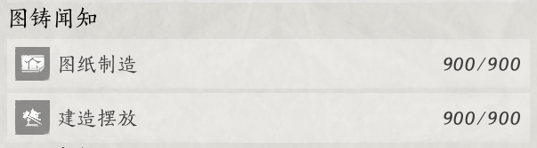
Both categories are quick to complete, so prioritize raising their thesis point caps.
Earn Building Placement Points Quickly
Use a Small Diagram to place structures as a group. This saves the time of building and dismantling them one at a time. If you prefer to build something new each time, you can skip this method.
1) Build and Dismantle Quickly with the Shared Bamboo Diagram
Use the share code SHAREb437990f7a196eaf to build and dismantle this Diagram in your Homestead's Beyond Mundane area. The screenshot below shows the materials you need:
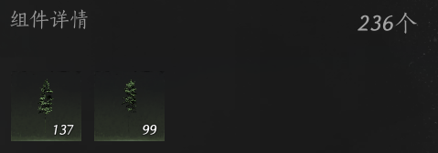
If you already know how to build from Diagrams, you can skip the detailed steps. Find the Small Diagram, choose “Place as Group,” select “Fill Hologram,” then select “Retrieve.”
Follow these steps:
Step | Instructions | Example image |
|---|---|---|
1 | Open the menu and select “Appearance.” |
|
2 | Select “Gallery” on the right. |
|
3 | Select “Build” on the left. Scroll the list if you cannot find it. | 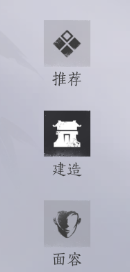 |
4 | Enter this Diagram share code in the search bar at the top right: SHAREb437990f7a196eaf | 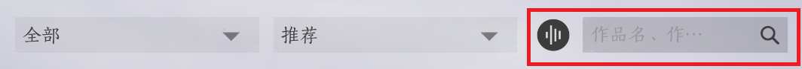 |
5 | Open the Diagram from the search results. There should be only one result. Select “Get Diagram.” |
|
6 | Teleport to Beyond Mundane, find an empty spot, and press F4 to enter Build Mode. | |
7 | Open the Building Inventory (B on PC) and find the Small Diagram you just added. | 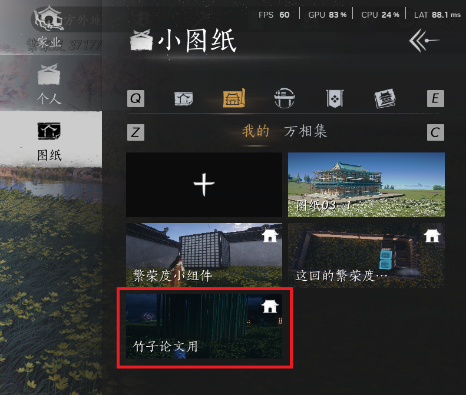 |
8 | Select the Diagram and choose “Place.” | 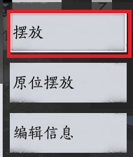 |
9 | In the confirmation prompt, select “Place as Group.” | 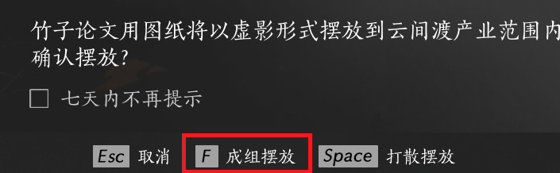 |
10 | While still in Build Mode, aim at the bamboo holograms and select “Fill Hologram.” |
|
11 | Once the holograms are filled, select “Retrieve.” | 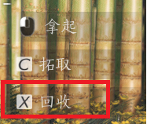 |
12 | Exit Build Mode and check whether your Building Placement thesis points are at the cap. If they are not, start again at step 6 and repeat the placement and retrieval. |


2) Create Your Own Diagram to Build and Dismantle Quickly
If you do not have enough bamboo for the shared Diagram, you can save up two weeks' worth or dismantle some of your existing bamboo. You can also design your own Diagram and use “Place as Group” with it each week. Here's how to make one:
Step | Instructions | Example image |
|---|---|---|
1 | Build everything you want to include on an empty plot. | |
2 | Enter Build Mode (F4 on PC). | |
3 | Open the build menu (~ on PC). | 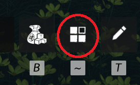 |
4 | Select “Diagram” in the menu. | 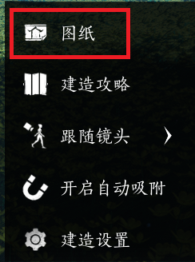 |
5 | Open the “Small Diagram” tab and choose the option to create a Diagram, circled in green. | 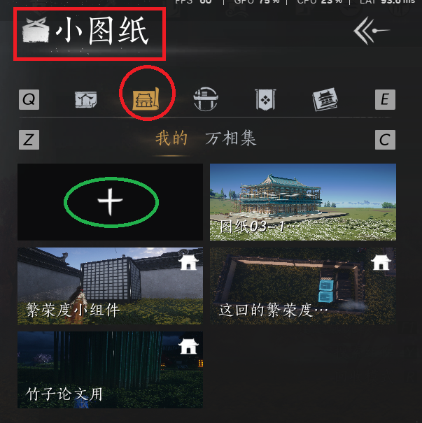 |
6 | The game highlights a 30 × 30 area by default. Make sure it encloses every structure you want to include. Drag the arrows on the four sides to resize and reposition the area. When it is ready, select “Generate Diagram.” | |
7 | Use the same method as in the bamboo section above to place the structures as a group and retrieve them repeatedly. |
Earn Diagram Creation Points Quickly
You must unlock Beyond Mundane in your Qinghe Homestead first. Follow these steps:
Step | Instructions | Example image |
|---|---|---|
0 | Delete last week's Diagrams from the inventory. Enter Build Mode, open the Building Inventory, go to the Homestead tab under Diagram, and delete last week's Diagrams one by one. | |
1 | Enter Beyond Mundane and select the hammer icon in the top right. | 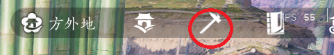 |
2 | Select “Generate Diagram” in the menu that opens on the right. |
|
3 | Name the Diagram, take any photo, and save it. |
|
4 | Wait for the Diagram details to appear. After sharing it to the Gallery from the right-hand panel, use the back button in the top-right corner and repeat from step 2. | |
One final reminder: Keep the Diagrams you created this week until next week. Deleting them right away will undo the thesis points you earned. |